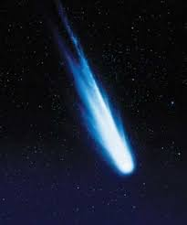

Komet Berekor Pendek

Jenis komet yang kedua adalah komet berekor pendek.
Komet berekor pendek merupakan komet yang ekornya tidak terlalu panjang.
Komet ini memiliki garis lintas yang sangat pendek sehingga kesempatan
untuk menyerap gas di sekitar hanya sedikit.
Dengan demikian ekor yang terbentuk pada komet pun tidak terlalu panjang.